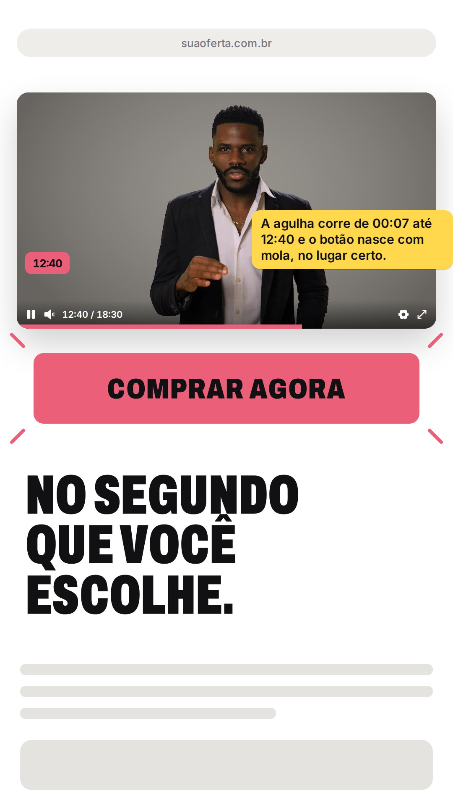
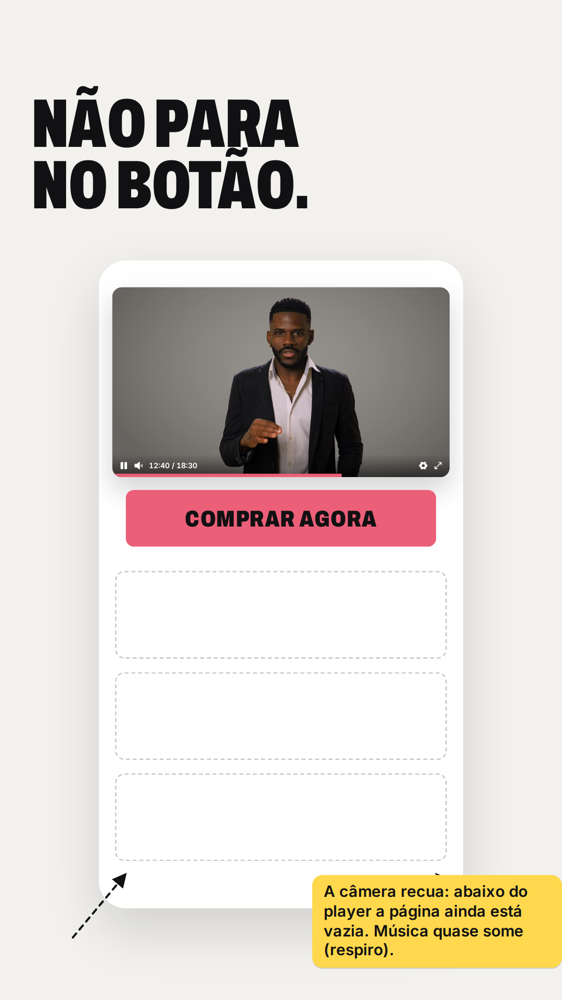
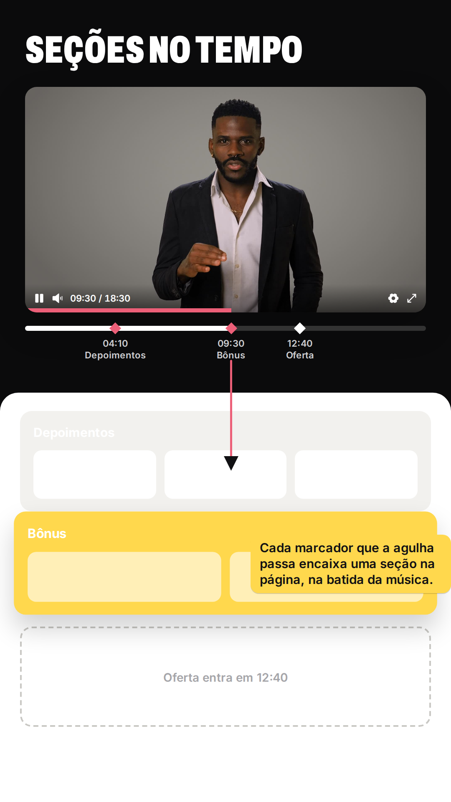
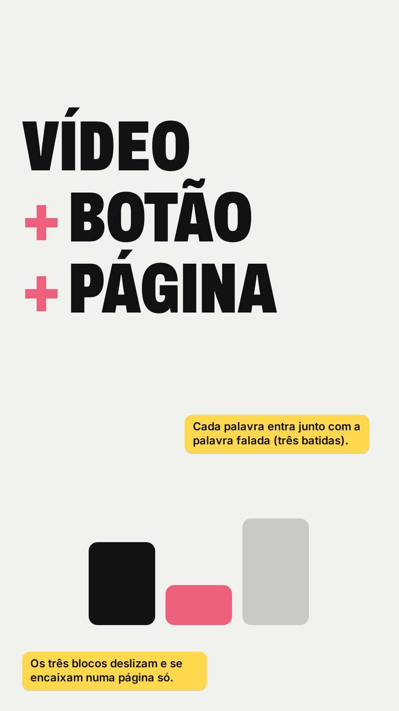
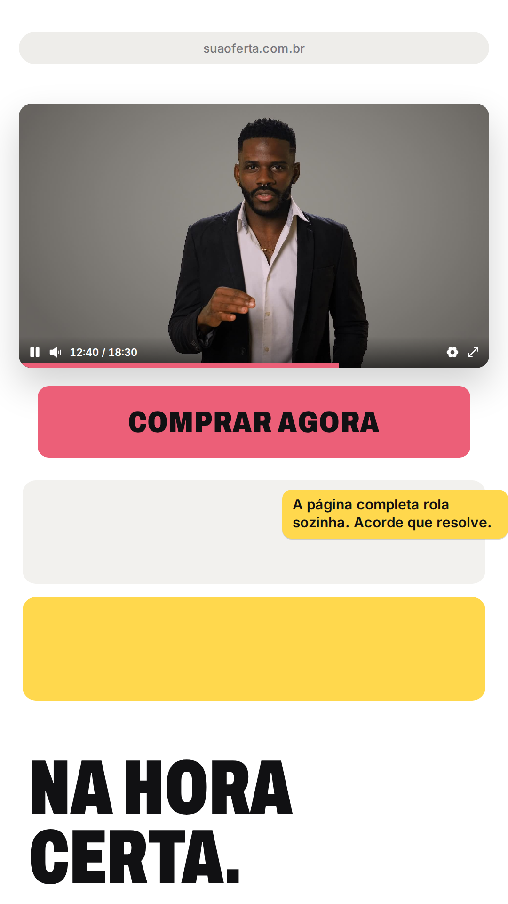
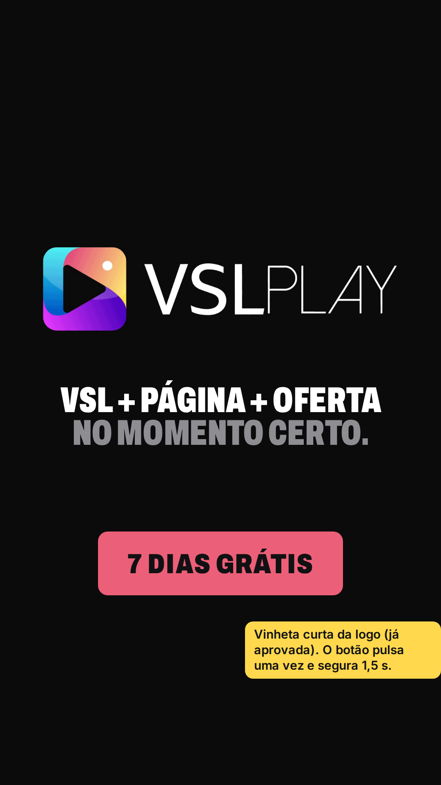

Parte 2 de 2 · cerca de 37 s · vertical 9:16 · o botão que chega cedo demais é o vilão; o VSLPLAY coloca ele no segundo certo

07 · 0:15 Cena 3 · virada
A agulha chega a 12:40 e o botão nasce no lugar certo.
"no momento definido por você."

08 · 0:18 Cena 4
A câmera recua: o resto da página ainda está vazio.
"E não precisa parar no botão."

09 · 0:20 Cena 5
Cada marcador da VSL encaixa uma seção da página.
"sincronizar seções da sua página…"

10 · 0:27 Cena 6
VÍDEO + BOTÃO + PÁGINA, uma palavra por batida.
"vídeo, botão e página…"

11 · 0:31 Cena 6
A página completa, tudo no lugar.
"trabalhando juntos na hora certa."

12 · 0:33 CTA
Logo e tela final do briefing.
"Isso é VSL Play. Teste grátis por 7 dias."